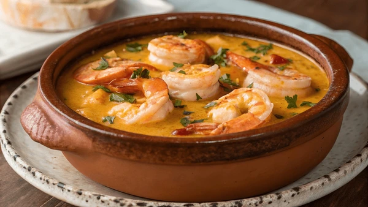

Cazuela de Mariscos Ivory
Premium seafood casserole with coastal spices

The Essence of Caribbean Coastal Cuisine
Our signature Cazuela de Mariscos represents the pinnacle of Caribbean coastal cuisine. This luxurious seafood casserole features the finest daily catches from Barranquilla's waters, including succulent shrimp, tender crab meat, and fresh mussels. Slowly simmered in a rich coconut broth infused with saffron and aromatic coastal spices, each spoonful delivers layers of complex flavors that dance on your palate.
Premium Ingredients
- Fresh Caribbean jumbo shrimp (200g)
- Local blue crab meat (150g)
- Mediterranean mussels (300g)
- Premium coconut cream
- Spanish saffron threads
Perfect Pairings
- Chardonnay - Enhances coconut flavors
- Albariño - Complements seafood
- Champagne - Elevates dining
Dietary Information
Allergens: Shellfish, Fish
Options: Gluten-free available
Calories: 485 kcal
Protein: 38g
Chef's Note
"Our head chef recommends pairing this dish with our house-made plantain chips and a crisp white wine. The secret lies in the slow-simmering technique that allows the seafood flavors to meld perfectly with the coconut base."
Origin & Tradition
Inspired by traditional Barranquilla coastal cooking, this dish represents our commitment to preserving local flavors while elevating them with modern culinary techniques. Each ingredient is carefully selected to honor our coastal heritage.